Appointment Notification Setup
Automated Appointment Notification Templates are setup in Providers Setup. Each Provider can specify which types of Automated Appointment Notifications Templates they want to use to notify patients.
- To add a new template click on the Add New icon under Patient Notification Templates.
- The Patient Notification Template Editor will popup.
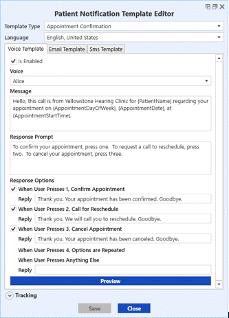
- Choose either Appointment Confirmation or Appointment Verification from the Template Type drop down list. A Confirmation will request a response from the receiver to either confirm, reschedule or cancel the appointment. A Verification does not require a response.
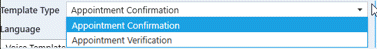
- Choose the Language for the template. The list of languages is the same as those available in Patient Details, so that patients with a matching language will receive the appropriate notification. If the patient has no language selected or a language where a template does not exist, they will receive the English template by default. Note: the template text must be entered in the desired language, TIMS does not do any translations.
- Choose the sub-tab for the template notification method - Voice, Email, or Sms (Text).
- To make an additional template that is based on a copy of an existing one, highlight the one to be copied and click the Copy button.
- The new template must be unique - the Template Type, Language, and/or inactive status must be different than the original in order for it to be saved.
- To delete a template, highlight it and click the Delete button. If a template has already been used, it cannot be deleted. You must make it inactive instead.
- To Copy template(s) from another provider, click the Add Multiple button
- Select the provider you wish to copy from. Only templates from the source that are unique will be copied.
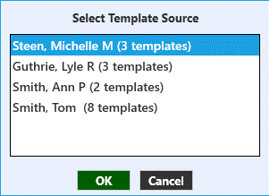
Automated Appointment Voice Notifications (Voice Template)
- The Is Enabled box is checked by default and indicates that this Voice template is active for the associated Provider.
- Choose a Voice for the message. The available choices will depend on the Language chosen and can be heard by previewing the message before the template is saved (see below).
- The Message will be pre-populated with default text and bookmarks.
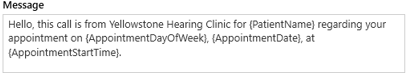
- You can accept the default message or edit as needed. If you are creating a non-English template, you will need to translate and type the message text in the desired language.
- Right click and select to insert specific patient and appointment information from the available bookmark list.

- Confirmation Only: the Response Prompt will also contain default text, but can be edited as needed. No bookmarks are available for this section. The message should give clear instructions to the recipient on how to respond.
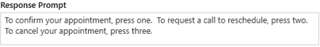
- Confirmation Only: the Response Options will also contain default text, but can be edited as needed. These are the responses the recipient will hear when they press 1, 2, 3, or 4 on their phone. You can also enter a reply if the recipient presses any other key by mistake. You can un-check any of the response options if desired. For example, if you don't want the recipient to have the option to request a Cancel, un-check the "3" response box.
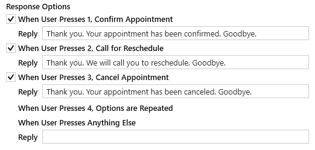
- When the template is complete, click the Preview button to listen to the message. On replicated databases, you must first replicate before previewing.
- You will be prompted to enter a phone number for the preview call to use - this is just a test call, so you can enter your own phone number to hear the message. A call will go to the number entered and you can listen and respond to the message.
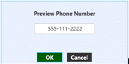
- You can then go back and edit the voice, message, or responses as needed and preview until you are satisfied.
- Click Save when finished, then Close.
- To edit an existing template, double-click on it in the Template list.
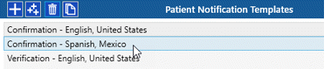
Automated Appointment Notification E-mails (Email Template)
- The Is Enabled box is checked by default and indicates that this E-mail template is active for the associated Provider.
- The Subject for the email will be pre-populated with default text and bookmark. You can accept the default message or edit as needed.
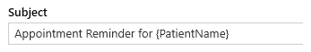
- The Body of the email will not be pre-populated. Type the email body message, including HTML tags if desired.
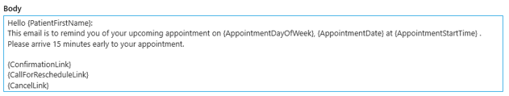
- If you are creating a non-English template, you will need to translate and type the message text in the desired language. Right click and select to insert specific patient and appointment information from the available bookmark list. Email bookmarks include links for the recipient to Confirm, Cancel or request a Reschedule.
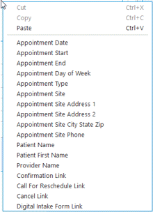
- Confirmation Only: In the Response Links sections, type the text you wish to appear for Confirm, Cancel and Request a Reschedule call. (see example) This is required for confirmations.
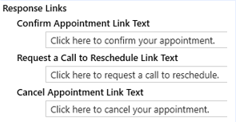
- Confirmation Only: In the Response Confirmations sections, type the response you wish the recipient to receive when they click on the buttons for Confirm, Cancel, or Request a Reschedule call. (see example) You can also enter a default response if the appointment does not update properly.
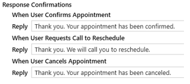
- When the template is complete, click the Preview button to send a test email. On replicated databases, you must first replicate before previewing.
- You will be prompted to enter an email address for the preview to use. When the email is received, you can click on the links Confirm, Cancel or request a Reschedule.
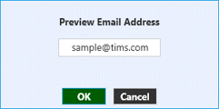
- You can then go back and edit the subject, body, or responses as needed and preview until you are satisfied.
- Click Save when finished, then Close.
- To edit an existing template, double-click on it in the Template list.
Automated Appointment Notification Texts (Sms Template)
- The Is Enabled box is checked by default and indicates that this Sms template is active for the associated Provider.
- The Message will be pre-populated with default text and bookmarks. You can accept the default message or edit as needed.
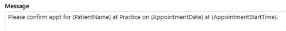
- If you are creating a non-English template, you will need to translate and type the message text in the desired language. Right click and select to insert specific patient and appointment information from the available bookmark list. The length of the characters in the message are calculated below the text message box as you type.
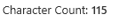
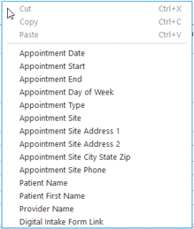
- Confirmation Only: the Response Prompt will also contain default text, but can be edited as needed. No bookmarks are available for this section. The message should give clear instructions to the recipient on how to respond.
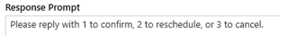
- Confirmation Only: in the Response Options sections, type the response the recipient will receive when they text back 1, 2, or 3. You can also enter a reply if the recipient texts another response by mistake. You can un-check any of the response options if desired. For example, if you don't want the recipient to have the option to request a Cancel, un-check the "3" response box.
- When the template is complete, click the Preview button to send a test text message. On replicated databases, you must first replicate before previewing.
- You will be prompted to enter a phone number for the preview text to use - this is just a test text so you can enter your own phone number to see the message. A text will go to the number entered and you can view and respond to the message.
- You can then go back and edit the message or responses as needed and preview until you are satisfied.
- Click Save when finished, then Close.
- To edit an existing template, double-click on it in the Template list.